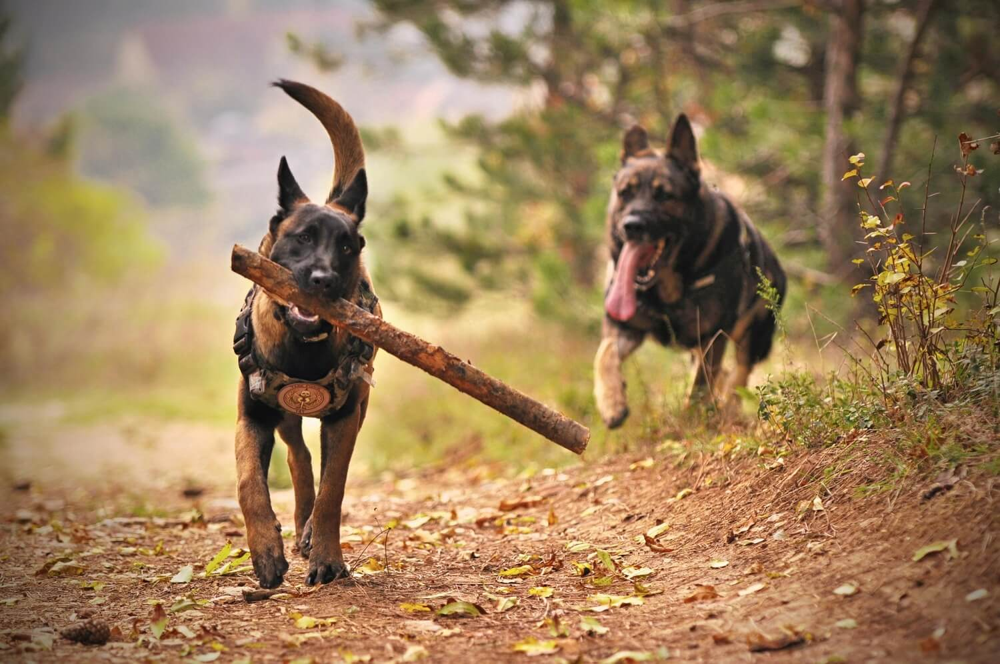
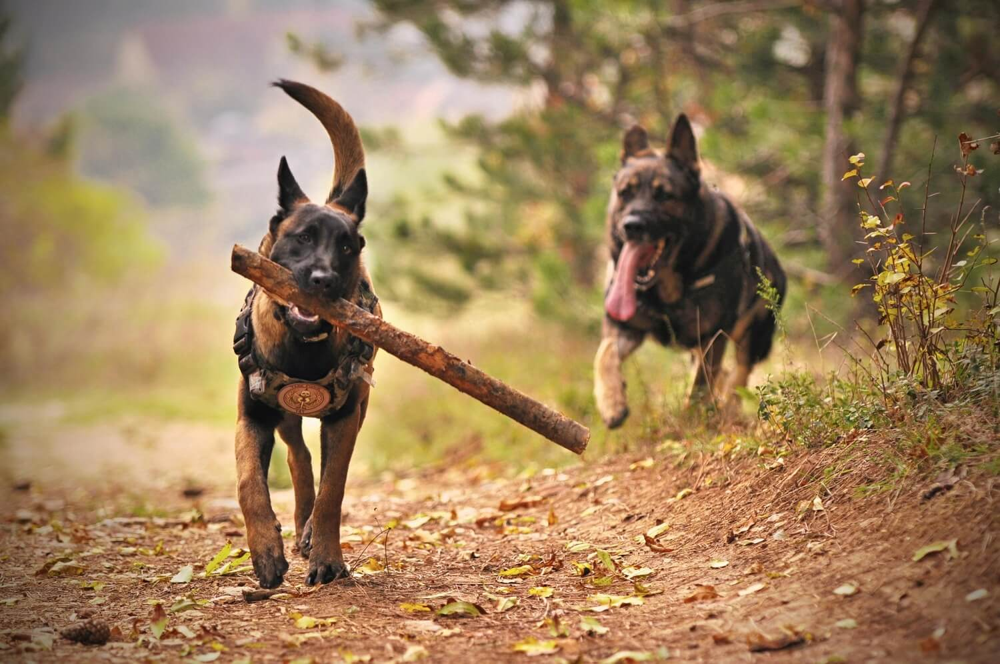

Dogs are warm, loyal and friendly creatures. When you need him, he is there to provide you with everything you need, be it attention, simple company or protection. It's common knowledge that dogs are man's best friends - and it's been that way for thousands of years. Dogs have been used as guardians, herders and hunters since ancient times. There is no guard dog without proper training. The dog does not come into your home from the wild. You took him from the litter, separated him from his family. Unknown environment, unknown people - confusion, lack of confidence and obedience is expected. Every dog, and especially a guard dog, must be taught two things: obedience and socialization. Obedience will help the owner and the dog to form a bond and to establish the leader of the pack. Stand, sit, lie down, stop, come, leave it, bark on command etc are a must for every guard dog. A guard dog must learn to obey commands without being distracted by other people, animals or places. A guard dog must be exposed to other people, animals and places often.
Benefits of having guardian dog:
- very good pets
- loyal and obedient to the owner
- protective of family members
- peace of mind
- incredibly sense of smell and hearing
- quick response to threat
 

“A well-trained dog will make no attempt to share your lunch. He will just make you feel so guilty that you cannot enjoy it.” – Helen Thomson (author)
“Intelligent dogs rarely want to please people whom they do not respect.” – W.R. Koehler (author, “The Koehler Method of Dog Training”)
“I’m suspicious of people who don’t like dogs, but I trust a dog when it doesn’t like a person.”― Bill Murray (actor)
“A dog is the only thing on earth that loves you more than you love yourself.” – Josh Billings